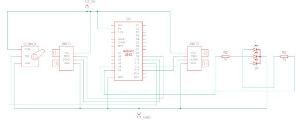
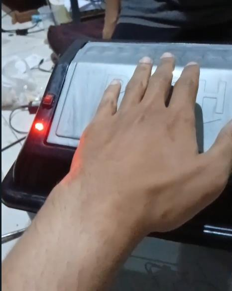
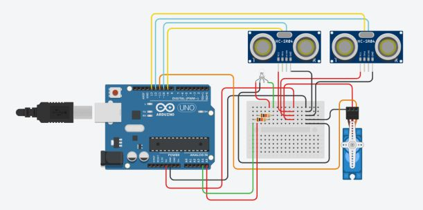
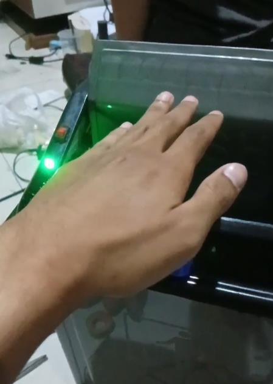

Responsive Automatic Trash Bin
A smart touchless waste receptacle utilizing register-level ATmega328P configurations, dual HC-SR04 ultrasonic sensors, a center-pivoted swivel SG90 servo motor lid-drive, and multi-state RGB LED warnings.
Hardware & Tech Stack
Skills & Competencies
The Challenge
Physical waste bin contact acts as a vector for pathogens, and bins are frequently neglected until overflow occurs. Furthermore, standard Arduino library frameworks like Servo.h and analogRead() introduce significant polling latency, resource blockages, and high flash overhead, which degrades the responsiveness required for safety lockouts and real-time sensor cycles.
The Engineered Solution
A dual-sensor smart bin running bare-metal register manipulation for minimal processor overhead. An external ultrasonic sensor measures user hand distance, while a second sensor monitors internal bin fill level. An analog system switch controls status. Direct register read/write overrides standard abstractions to optimize sensor trigger loops, LED toggling, and servo PWM angles.
The system is engineered around direct ATmega328P micro-controller register operations to minimize instruction latency. The block interactions operate as follows:
Sensor Signal Flow
Dual ultrasonic triggers run in sequential order. 10μs trigger pulses are sent directly via PORTB write lines. Echo pulse durations are measured and filtered through a rolling 5-sample noise-rejection filter.
Actuator & Feedback Drive
Timer 1 hardware registers run a Phase Correct PWM signal driving the SG90 servo. PWM angles update inside OCR1A. Indicator warning lights use PORTC outputs to toggle red/green colors.
This firmware bypasses the high abstraction overhead of default Arduino commands in favor of direct ATmega328P micro-controller register operations.
| Register | Purpose in Automatic Trash Bin | Concrete Implementation Details |
|---|---|---|
DDRB / DDRC |
Data Direction Registers | Sets pin 9 (TRIG1) and pin 13 (TRIG2) to output, and pin 10 (ECHO1) and pin 12 (ECHO2) to input. Configures analog inputs and LEDs. |
PORTB / PORTC |
Port Output Registers | Directly pulls trigger pins HIGH for 10 microseconds to fire ultrasonic bursts, and toggles Red/Green LEDs on and off. |
PINC |
Port Input Register (C) | Reads analog values for SWITCH_PIN (A3). Reads voltage levels directly to evaluate offline status thresholds. |
TCCR1A / TCCR1B |
Timer/Counter1 Control Registers | Configures Phase Correct PWM mode on Timer 1 to drive the servo motor PWM signal at 50Hz, enabling high precision movement. |
OCR1A |
Output Compare Register 1A | Directly updated to control the servo duty cycle. Moves the servo shaft to 120° (lid open) or 180° (lid closed). |
The system architecture integrates sensors, switches, and actuators centered around the ATmega328P microprocessor.
Circuit Schematic Diagram

Schematic outlining the ultrasonic sensor triggers, servo control lines, and switch wiring.
Hardware Wiring & Cabling

Breadboard connection model and system power supply routing.
Prototype built using structural cardboard, a micro servo SG90, two HC-SR04 sonar units, and an indicator LED module.
Prototype - Closed State

Standby position. Servo OCR1A at 180° holding lid flat. LED is off.
Prototype - Opened State

Active trigger. Servo OCR1A rotated to 120° tilting lid open. LED glows green.
The microcontroller firmware is structured into four main operational blocks. Breaking the source code down reveals how register adjustments and digital feedback processes operate:
1. System Definitions & Register Initialization
This section declares system I/O pin mappings and initializes system operations. Rather than executing slow runtime lookups, the setup() routine directly defines pins as input/output using the microcontroller data registers. It also hooks up the SG90 servo motor to PWM pin 11, sets Timer 1 registers (TCCR1A, TCCR1B) to run high-precision Phase Correct PWM, and defaults the lid angle to closed (180°).
#include <Servo.h>
#define RGB_RED A5 // Register DDRC digunakan untuk menetapkan pin ini sebagai output
#define RGB_GREEN A4 // Register DDRC digunakan untuk menetapkan pin ini sebagai output
#define TRIG1_PIN 9 // Register DDRB digunakan untuk menetapkan pin ini sebagai output
#define ECHO1_PIN 10 // Register DDRB digunakan untuk menetapkan pin ini sebagai input
#define TRIG2_PIN 13 // Register DDRB digunakan untuk menetapkan pin ini sebagai output
#define ECHO2_PIN 12 // Register DDRB digunakan untuk menetapkan pin ini sebagai input
#define SERVO_PIN 11 // Register Timer1 (TCCR1A, TCCR1B) digunakan untuk mengontrol PWM
#define SWITCH_PIN A3 // Register DDRC digunakan untuk menetapkan pin ini sebagai input
Servo myServo;
bool isOpen = false; // Status untuk melacak apakah servo pada tutup sampah terbuka atau tertutup
void setup() {
// Monitor Serial
Serial.begin(9600);
// Switch on/off
pinMode(SWITCH_PIN, INPUT); // DDRC digunakan untuk menetapkan SWITCH_PIN sebagai input
// LED RGB
pinMode(RGB_RED, OUTPUT); // DDRC digunakan untuk menetapkan RGB_RED sebagai output
pinMode(RGB_GREEN, OUTPUT); // DDRC digunakan untuk menetapkan RGB_GREEN sebagai output
// Sensor luar
pinMode(TRIG1_PIN, OUTPUT); // DDRB digunakan untuk menetapkan TRIG1_PIN sebagai output
pinMode(ECHO1_PIN, INPUT); // DDRB digunakan untuk menetapkan ECHO1_PIN sebagai input
// Sensor dalam
pinMode(TRIG2_PIN, OUTPUT); // DDRB digunakan untuk menetapkan TRIG2_PIN sebagai output
pinMode(ECHO2_PIN, INPUT); // DDRB digunakan untuk menetapkan ECHO2_PIN sebagai input
// Servo
myServo.attach(SERVO_PIN); // TCCR1A dan TCCR1B digunakan untuk menghasilkan sinyal PWM
myServo.write(180); // Mengatur register OCR1A untuk menggerakkan servo ke posisi tertutup
digitalWrite(RGB_RED, LOW); // PORTC digunakan untuk mematikan LED merah
digitalWrite(RGB_GREEN, LOW); // PORTC digunakan untuk mematikan LED hijau
}2. Low-Level Distance Calculation
This function runs manual ultrasonic trigger pulses. To calculate distance, it pulls the trigger pin LOW to clear it, spikes it HIGH for 10 microseconds using port registers, and pulls it LOW again. Timer 0 microsecond ticks measure the incoming response echo duration using pulseIn(), which is then divided by 58.2 to scale duration into a centimeter measurement.
int calculateDistance(int trigPin, int echoPin) {
long duration;
int distance;
// Reset pin trigger
digitalWrite(trigPin, LOW); // PORTx digunakan untuk mengatur pin trigger ke LOW
delayMicroseconds(2); // Delay berbasis Timer0 (TCCR0A, TCCR0B)
// Mengaktifkan pin trigger HIGH selama 10 mikrodetik
digitalWrite(trigPin, HIGH); // PORTx digunakan untuk mengatur pin trigger ke HIGH
delayMicroseconds(10); // Delay berbasis Timer0
digitalWrite(trigPin, LOW); // PORTx digunakan untuk mengatur pin trigger ke LOW
// Mengukur durasi sinyal pantulan dari pin echo
duration = pulseIn(echoPin, HIGH); // Timer1 digunakan untuk menghitung durasi
// Menghitung jarak sensor HCSR-04 (cm)
distance = duration * 0.034 / 2;
return distance;
}3. Proximity and Capacity Filtering
To prevent erratic mechanical lid behavior from sonar scatter and noise, the firmware runs rolling average filters. It queries each sensor 5 times at 5ms intervals. If the external average hand proximity is under 30 cm, it returns true. For the inner sensor, if the trash fill average clearance distance falls under 10 cm, the bin evaluates as full.
// Fungsi untuk mendeteksi keberadaan tangan
bool detectHand() {
const int numReadings = 5; // Jumlah pembacaan untuk rata-rata
int total = 0;
for (int i = 0; i < numReadings; i++) {
total += calculateDistance(TRIG1_PIN, ECHO1_PIN);
delay(5); // Delay berbasis Timer0 (TCCR0A, TCCR0B)
}
int averageDistance = total / numReadings;
// Tampilkan jarak tangan yang terdeteksi di Monitor Serial
Serial.print("Jarak Deteksi Tangan: ");
Serial.print(averageDistance);
Serial.println(" cm");
return averageDistance < 30; // Tangan terdeteksi jika jarak rata-rata kurang dari 30 cm
}
// Fungsi untuk mengecek apakah tempat sampah penuh
bool isTrashBinFull() {
const int numReadings = 5; // Jumlah pembacaan untuk rata-rata
int total = 0;
for (int i = 0; i < numReadings; i++) {
total += calculateDistance(TRIG2_PIN, ECHO2_PIN);
delay(5); // Delay berbasis Timer0 (TCCR0A, TCCR0B)
}
int averageDistance = total / numReadings;
// Tampilkan jarak tempat sampah penuh di Monitor Serial
Serial.print("Jarak Sampah Penuh: ");
Serial.print(averageDistance);
Serial.println(" cm");
return averageDistance < 10; // Tempat sampah penuh jika jarak rata-rata kurang dari 10 cm
}4. Controller State Control Loop
The main execution loop manages the system's operating states. If the system switch analog input (PINC) reads below 620 units (about 3.0V), the loop logs "System offline", forces the servo to 180° to keep the lid closed, and returns immediately. If online and the bin is full, it flashes the red alert LED when motion is detected and refuses to open. If online and not full, it opens the lid (rotating servo to 120° and activating the green status LED) whenever an approaching object triggers the proximity sensor.
void loop() {
if(analogRead(SWITCH_PIN) < 620) { // PINC digunakan untuk membaca nilai analog dari SWITCH_PIN
Serial.print(analogRead(SWITCH_PIN));
Serial.println(" System offline");
delay(1000); // Delay berbasis Timer0
if (isOpen) { // Hanya tutup jika sedang terbuka
myServo.write(180); // Menutup servo, memengaruhi register OCR1A
isOpen = false; // Memperbarui status
delay(1000); // Delay berbasis Timer0
}
return;
}
if (isTrashBinFull()) {
// Tunjukkan bahwa tempat sampah penuh dengan LED merah
if (detectHand()) {
digitalWrite(RGB_RED, HIGH); // PORTC digunakan untuk menghidupkan LED merah
delay(1000); // Delay berbasis Timer0
digitalWrite(RGB_RED, LOW); // PORTC digunakan untuk mematikan LED merah
}
// Pastikan servo tertutup
if (isOpen) {
myServo.write(180); // Tutup servo, memengaruhi register OCR1A
isOpen = false;
}
} else {
// Cek deteksi tangan
if (detectHand()) {
if (!isOpen) { // Hanya akan terbuka jika servo belum terbuka
myServo.write(120); // Membuka servo, memengaruhi register OCR1A
digitalWrite(RGB_GREEN, HIGH); // PORTC digunakan untuk menghidupkan LED hijau
isOpen = true; // Memperbarui status
delay(1000); // Delay berbasis Timer0
digitalWrite(RGB_GREEN, LOW); // PORTC digunakan untuk mematikan LED hijau
}
} else {
if (isOpen) { // Hanya tutup jika sedang terbuka
myServo.write(180); // Menutup servo, memengaruhi register OCR1A
isOpen = false; // Memperbarui status
delay(1000); // Delay berbasis Timer0
}
}
}
}Explore the Codebase
Access the complete Arduino wiring layout, mechanical design documentation, and register configuration codebases on GitHub.